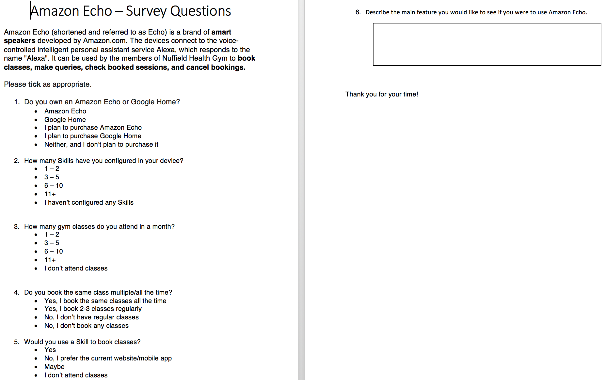

We felt that taking a ‘Survey’ will be a good choice. This is because we have established key questions which we need answers for. Those answers will enable us to create an ideal UI design for the users. We do understand that the downside of this choice is that the design of the survey is crucial; for getting suitable results out of it. For this reason, we put a lot of thought into the making of the Survey with as little questions as possible. More precisely, we used Questions 1 and 3 to identify the market size, Question 2 to figure out the likelihood of the usage of Amazon Echo, and Questions 4, 5 and 6 to learn more about the design of our Skills.
We also used the process of ‘iteration’ to first draft a set of questions, get feedback from our client, re-do the design, discussed the design over a Skype call again, and then finalised the Survey. The Survey will be distributed by our client to receive feedback.
